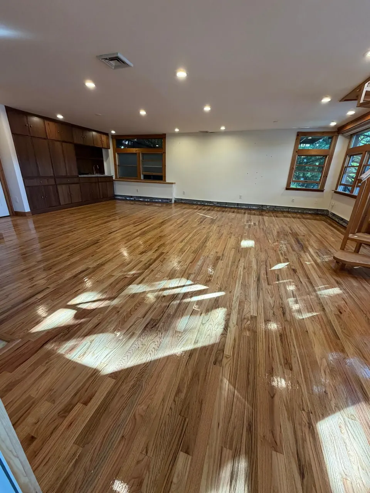
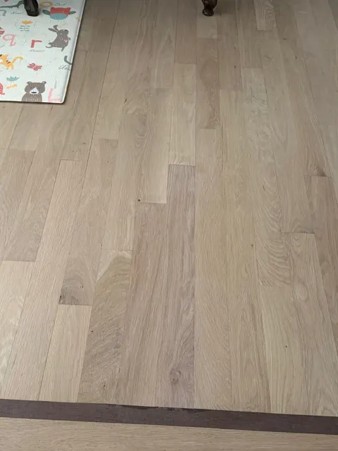
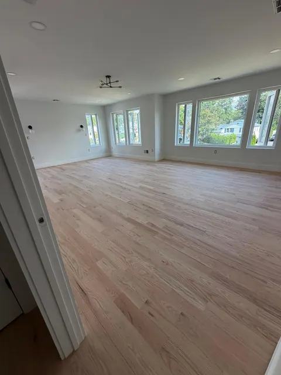
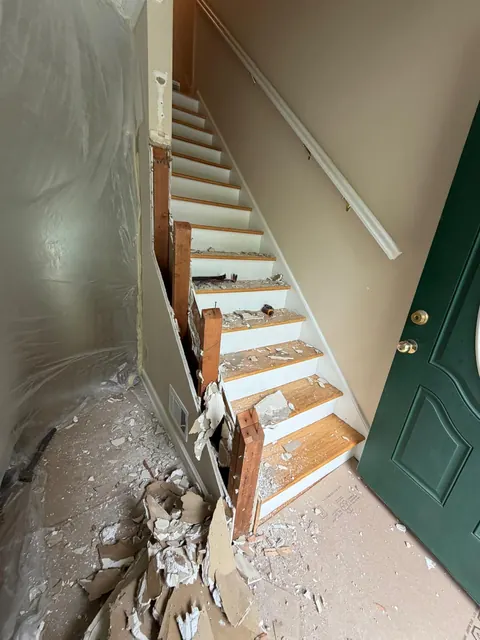
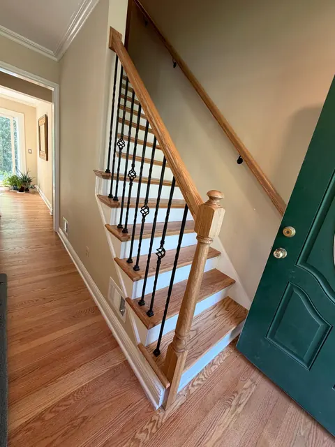

Hardwood floors sanded, stained and refinished until they look brand new.
Hardwood floor refinishing, repair and new installation for homes across Union County and North Jersey. Free on-site estimate, written price, clean job.
Request your free estimate
Takes 20 seconds. We call you back within one business day.
- Free on-site estimates
- Residential & commercial
- Satisfaction guarantee on every job
- Premium materials
- Installation, refinishing & repair
- Serving Union County & North Jersey
Hardwood flooring services in Linden and Union County, all done in-house.
If you have oak, maple or pine under carpet or tile, there's a good chance it can be brought back instead of replaced.

Hardwood floor refinishing
Full sand, optional stain, and two or three coats of finish. Scratches, gray wear paths and old orange polyurethane gone.
Refinishing details
Hardwood & LVP installation
New solid or engineered hardwood, or luxury vinyl plank for kitchens and basements. Old floor removal and subfloor prep included.
Installation details
Floor sanding
Drum and edge sanding down to clean wood, with dust containment. The step everything else depends on.
Sanding details
Floor staining
Natural, light, gray-toned or dark. We test the colors on your sanded floor so you choose from the real thing.
Staining details
Floor repair
Board replacement, pet stains, water damage, gaps, squeaks, and patching where a wall or vent was removed.
Repair detailsStair refinishing
Treads and risers sanded, stained to match the floor and finished, or new oak treads over old steps.
Stair details
A small hardwood crew out of Linden, New Jersey.
Costa Flooring is owner-run. The person who comes out to measure your floor is the person who sands it. No hand-off to a crew you've never met.
Most of our work comes from referrals in Union, Essex and Middlesex counties, which means the job has to be right the first time, and the house has to be left clean.
Hardwood floors before and after, in real New Jersey homes.
Drag the handle. No stock photos, no showroom shots. These are our jobs.


Before AfterStaircase rebuild and refinish. New oak treads, painted risers, new railing, finished to match the hallway floor.

 Before
After
Before
After
Hallway refinish with board repairs. Patched boards blended in, sanded to bare wood, stained and finished.
Pick your color on your own floor.
A chip in a store tells you almost nothing: oak, maple and pine take color differently, and your light changes it again. So we tape samples on your sanded floor and you choose from the real thing.

Tap a color. Tones are approximate; species and finish shift them, which is exactly why we sample on your floor.
Why Union County homeowners call Costa Flooring instead of the next guy.
Written prices
The estimate you sign is the price you pay.
2–5 day jobs
A written schedule before the sander comes in.
Colors on your floor
Stain samples tested on your sanded wood.
Dust contained
Sealed doorways, vacuum sanders, full cleanup.
Same person, start to finish
Who quotes the job works the job.
How a job goes, from the first call to the last coat.
You'll know the price, the schedule and what to expect before anyone brings a sander into your house.
-
Free on-site estimate
We look at the floor in person, check the wood thickness, measure, and give you a written price. No pressure to decide on the spot.
-
Prep and sanding
Furniture moved, work area sealed off, floor sanded to clean wood with dust-containment equipment. Repairs happen here.
-
Color samples and stain
Stain samples go on your actual floor. You pick, we stain. Skip this step if you want the natural color.
-
Finish and walk-through
Two or three coats of finish with drying time between. We walk the floor with you before we call it done, then clean up and go.
What New Jersey homeowners say about our work.
My floors look beautiful! Costa was very detailed in helping me find the right color and gloss. Everything came out even better than I had hoped.
Renato arrived even earlier than scheduled. He did a fantastic job sanding, staining, and refinishing multiple rooms and stairs. Great to work with!
They fixed a mess left by another installer. Costa Flooring leveled and installed the floor perfectly. Great attention to detail!
Costa Flooring exceeded all expectations with flawless hardwood flooring and exceptional craftsmanship. Their team was punctual, clean, and used premium materials. Highly recommended!
Everything went excellent. Renato was very professional and fast. Great quality flooring job from start to finish.
Excellent renovation of our home flooring. The team was friendly, responsive, and highly organized. Impeccable, clean work throughout.
Recent hardwood floors around North and Central Jersey.
Refinished oak, new installations, stairs and inlay borders. Click any photo to see it larger.


Where we work, from Linden across North Jersey.
We're based in Linden and do most of our work in Union County and the towns around it, with regular jobs across North and Central Jersey.
If your town isn't on the map, call. If it's a reasonable drive for us, we'll come take a look.
- Linden
- Elizabeth
- Union
- Cranford
- Clark
- Rahway
- Roselle Park
- Hillside
- Springfield
- Scotch Plains
- Westfield
- Newark
- East Orange
- West Orange
- Jersey City
- Woodbridge
- Colonia
- Perth Amboy
- Edison
- New Brunswick
- North Brunswick
- Paterson
- Paramus
- Red Bank
Questions homeowners ask us every week.
It depends on square footage, the condition of the wood, how many rooms and stairs are involved, and whether you want a stain color or a natural finish. We give a written price after a free on-site visit, and the price we quote is the price you pay.
Most homes take 2 to 5 days: sanding, stain if you chose one, and two or three coats of finish with drying time between coats. You get a written schedule before we start.
Usually yes, as long as you can stay off the floors being finished. We seal off the work area and use dust-containment sanders. Bedrooms upstairs are typically fine while we finish the main floor.
Solid hardwood can usually be sanded and refinished several times, and it costs a fraction of replacement. If boards are badly water-damaged, rotted or already sanded too thin, we'll tell you and quote a repair or new installation instead.
After sanding, we apply several stain samples directly on your floor so you see the real color on your wood, in your light. You choose, then we stain the whole floor.
Yes. We sand, stain and finish treads and risers, and we can install new oak treads over existing stairs. Stairs are quoted with the floor or on their own.